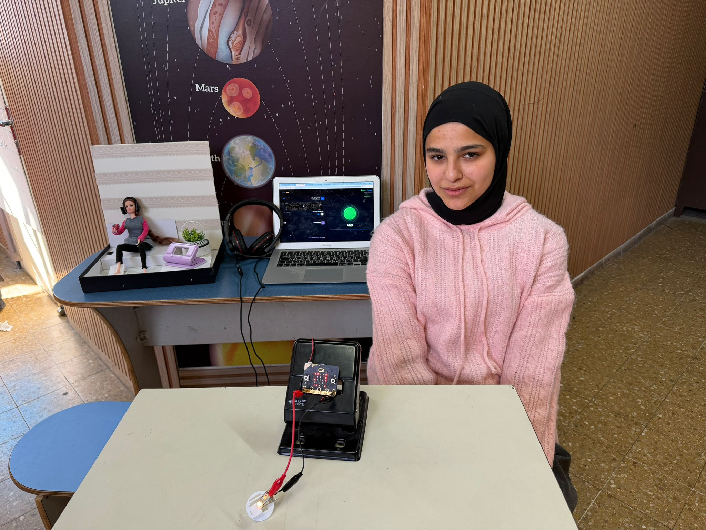

نسعى لخلق بيئة مدرسية دامجة، حيث لا يُنظر للحركة الزائدة كـ "مشكلة"، بل كـ "طاقة كامنة" يمكن استثمارها. رؤيتنا هي صف دراسي يحترم احتياجات كل طالبة ويحول التحديات إلى إنجازات مستدامة.
تعاني الصفوف الدراسية من تحدي مزدوج: فرط الحركة لدى بعض الطالبات، والضغط النفسي من الامتحانات. مما يصعب على المعلمة إدارة الحصة ويشعر الطالبة بالإحباط.
نظام "التركيز الذكي" هو حل شامل يتكون من:
1. دواسة مخفية: تحول الحركة العصبية لطاقة.
2. استدراك ذكي: شرح الدروس بصوت المعلمة مع صور توضيحية.
3. عزل صوتي: سماعات تبث موسيقى هادئة (White Noise) للتركيز.
(Motion)
(Micro:bit)
(Visual AI)
(Focus)
-
جودة التعليمSTEM: فيزياء وبرمجة.
-
Well-being الصحة والرفاه: صحة نفسية.
-
تمكين الفتيات: ريادة الفتيات في الابتكار.
-
Sustainability: طاقة نظيفة واستدامة.
يدمج المشروع بين الـ Hardware والذكاء الاصطناعي:


- آلية الدباسة (Smart Pedal): تحويل الضغط الميكانيكي لإشارة.
- Micro:bit: معالجة الإشارة وحساب الطاقة.
- المعلم الذكي (AI Teacher): دمج صوت المعلمة مع صور توضيحية.
امسح الرمز (QR) لمشاهدة فيديو يشرح فكرة المشروع وكيفية عمله.
